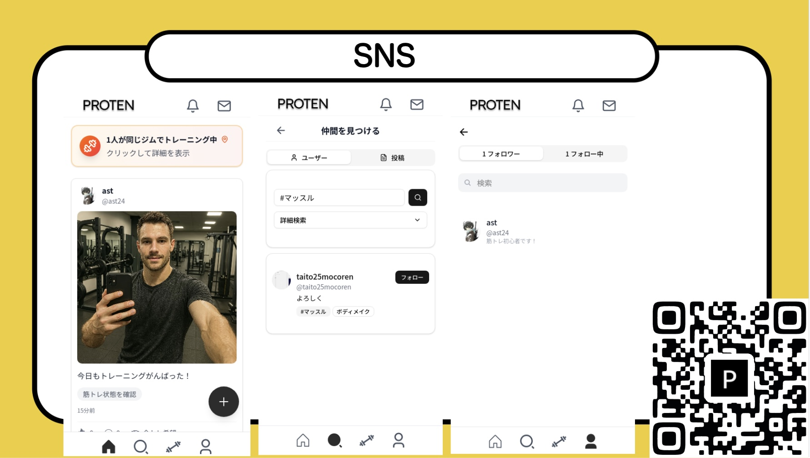
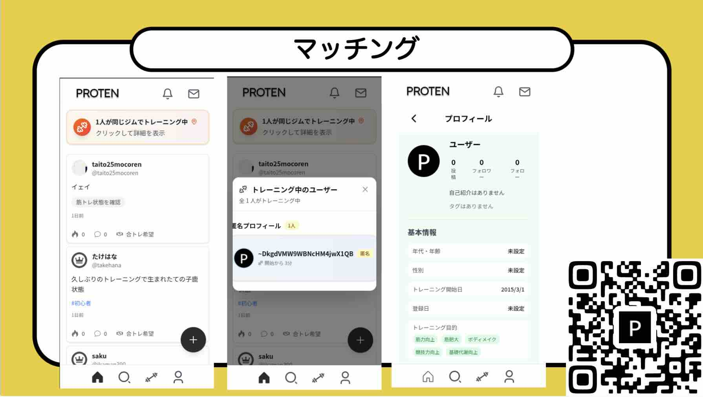
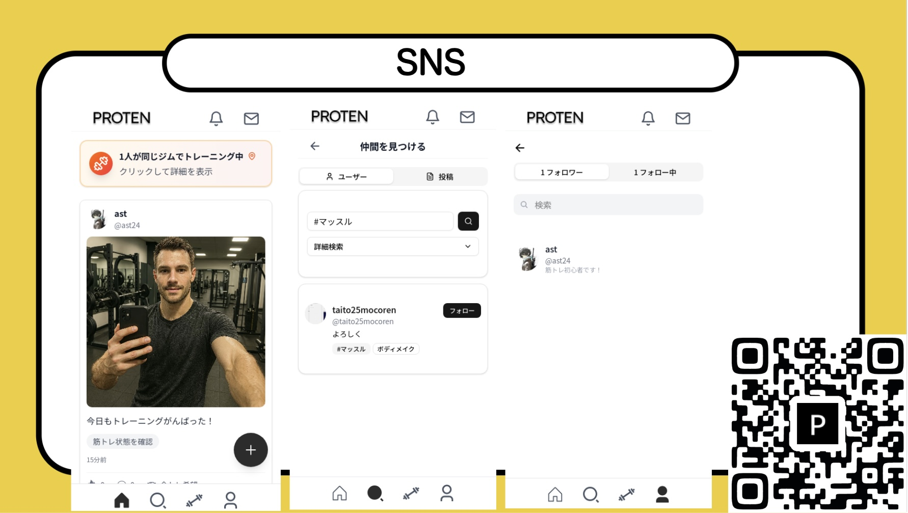
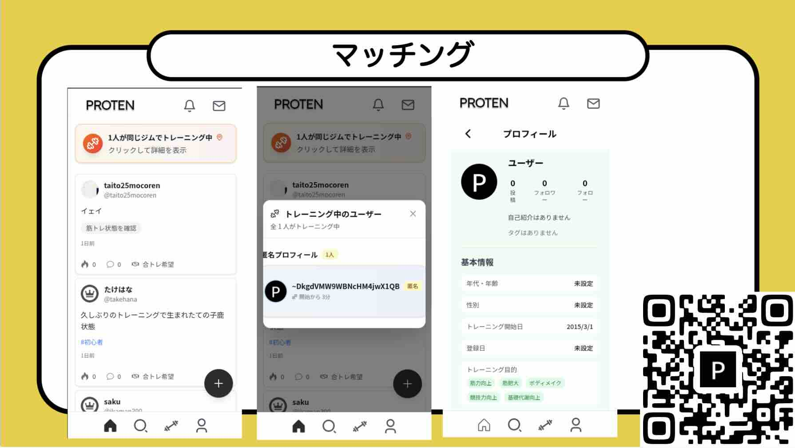

PROTEN
 



Product / App Design
2025
tornad2025 企業賞 受賞
PROTENは、筋トレ初心者向けの「SNS×マッチングアプリ」である。「一人では続かない」という課題に対し、同じジムに通う仲間と繋がり、共にトレーニングする「合トレ」体験を提供する。
仲間との努力のシェアや記録機能を通じて、孤独になりがちな筋トレを「仲間と楽しむ」アクティビティへと変え、継続率の向上を目指した。